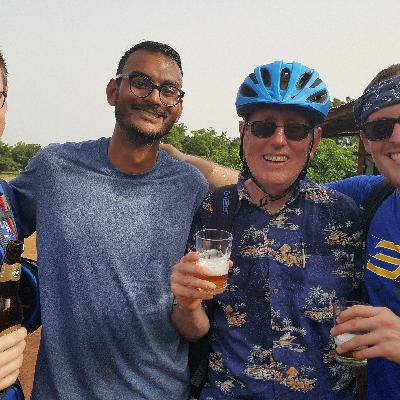
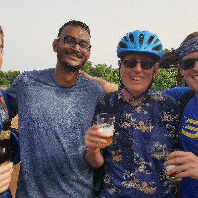

Today was Eid al Fitr, the end of the month of Ramadan. For a while, it became like the part of Halloween for kids. I've got a few pictures of that, and me and some of the other PCTs. In some ways, things are beginning to get a little tough, but it's still great to be here.
This is actually kinda hard!
Well, here goes… I'm going for the picture upload. I've been getting better data connections lately, so I might be able to get this uploaded in a reasonable amount of time…

 


Things are still going well, but it's definitely getting harder. The initial excitement has worn off, and a lot of us are starting to feel like it's a bit of a grind. I've got it easy, since I speak French well; the folks who are just learning French have the constant stress of being emerged in a foreign language. It's bad enough for me, with the double frustration of my good-but-imperfect French, and the variable level of French proficiency among the Burkinabè.
We're still in a bit of an artificial environment, even though we're in a village, and living with families. The Peace Corps is taking care of us in ways that I think are meant to be hidden, like the fact that all of the area restaurants are being subsidized to wash their vegetables in chlorinated water before serving them to us. It makes sense, since we can't cook for ourselves, and we have to eat in restaurants for lunch. The Peace Corps is also making things artifically hard for us, like, for example, instructing host families that they are forbidden from speaking English to us even if they speak it perfectly well.
The only reason I know this is that my French is good enough to get chatty with folks like restaurant owners, and I guess the Peace Corps didn't tell them to keep it a secret :-)
It's kind of hard to know what to write, because a lot of what's going on would sound munane. A lot of Peace Corps blogs and videos talk about pooping in a hole, but a pit latrine really isn't that big a deal, for example. The things that are grinding me down a bit are the lack of communication, since they don't open up the Peace Corps training wifi to us (maybe because we'd overload it), exacerbated by a cell data network being overloaded by 70 volunteer smartphones. Another mundane-but-frustrating fact: The power goes out all the time. So does the water, specifically, when the power to the pumping station goes out. So there's that. Also, it turns out that when you add 14 drops of chlorine every time you put 7 liters of water in your top bucket, the water comes out tasting of chlorine. Who knew? Oh, and the insecticide in my mosquito net makes me sneeze. But it kills mosquitos, so I'll take it.
It's probably a good thing I don't have a brother, because I would kill my brother for a plate of brussels sprouts and a café gourmand (a French espresso with four tiny desserts) right about now. Pretty much every meal is a starch and meat, maybe with a couple of vegetables. Most meals are just the main course, though with maybe a mango or a couple of banannas every couple of days. Not many fruits or vegetables is what I'm saying. I think this part will get better when I'm at site, since I'll be in more control of my own diet.
My fellow volunteers continue to be awesome.
Happy Eid!
Today everybody celebrated Eid al Fitr, which I guess means it started last night at sundown. That's the end of Ramadan, so muslims (like my host family) won't be fasting during the day anymore. They celebrate Eid by going around visiting eachother, mostly, which is pretty wonderful. I saw the father of my host family's mother, father and grandfather, and met scads of his brothers and sisters, all within a couple of blocks. You end up eating lots of meals – I got up to at three lunchs and two dinners by the close of festivities. Happily, it's OK to just take a tiny bit of food.
The other big thing that happens is that kids go house to house asking for candy. We were warned, so I had a little bag of hard candies to give out. All of the kids wear their best clothes for their Eid trick-or-treating; they're quite beautiful and charming.